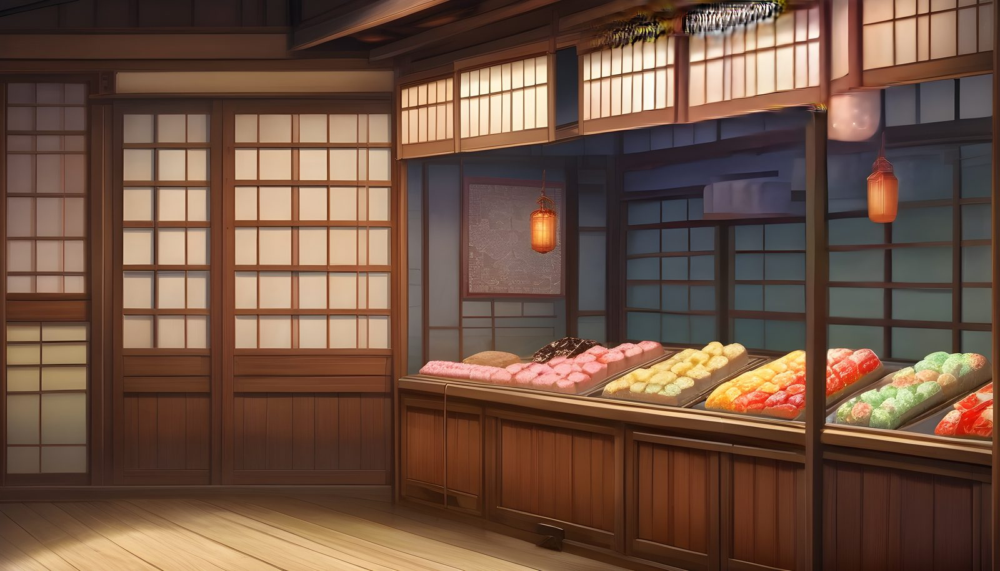

三代目のこと
昭和三十一年、祖父が葛葉町の角で始めた店です。

餡は今も、祖父の代と同じ銅鍋で毎朝炊いています。変えたのは、上生菓子の数を四種から八種に増やしたことと、取り置きをInstagramで受けるようにしたことくらいです。
法事やご挨拶の数がまとまる時は、日持ちと持ち歩く時間まで聞いてから箱を組みます。
三代目 樋口 康平
- 法事の御供を相談したら、日持ちと数まで一緒に考えてくれました。K.Mさん 60代
- 上生菓子が月で替わるので、毎月の楽しみにしています。S.Tさん 40代